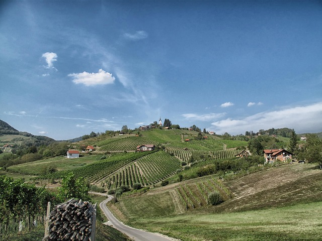
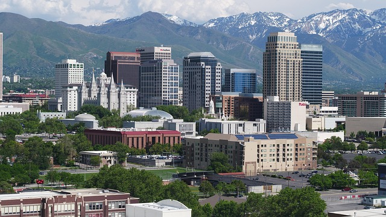
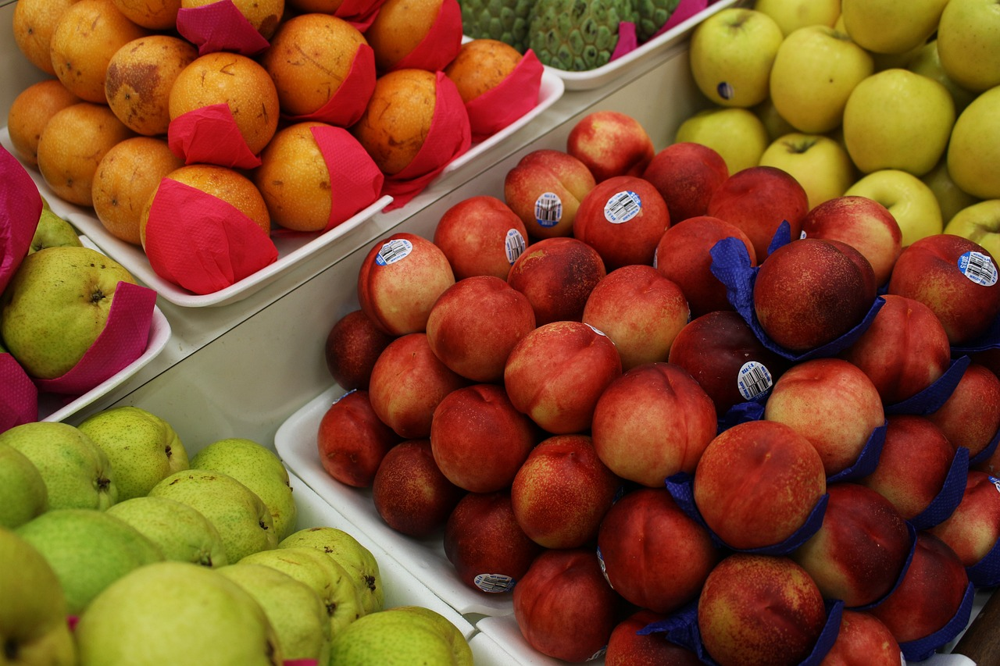
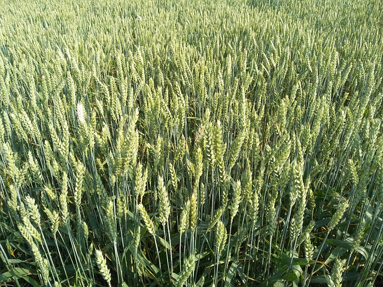
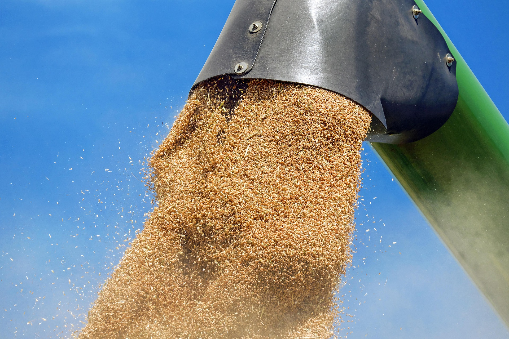
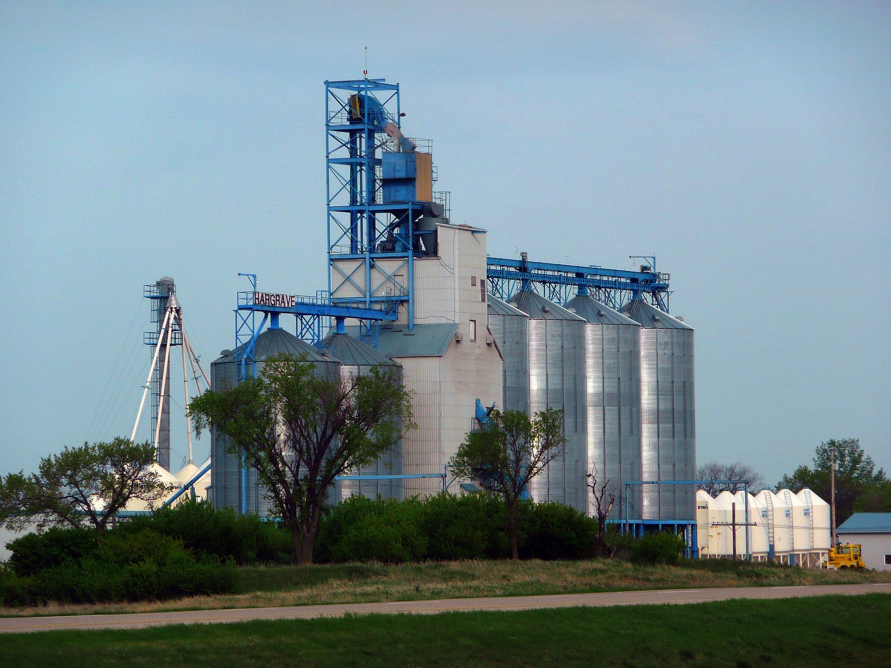
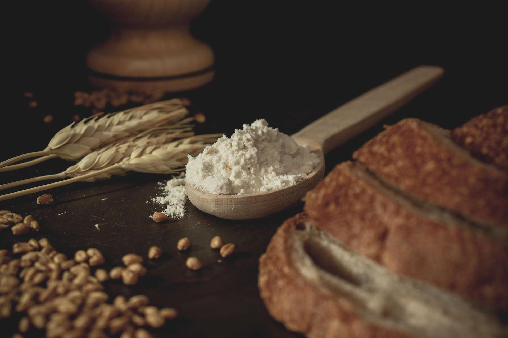

Início
O intuito desse projeto é demonstrar a importância da ligação de benefício mútuo entre o meio rural e o meio urbano, através de um exemplo de processo que envolve tanto a ação da cidade quanto a ação do campo. Aqui, você irá descobrir a importância do trabalho no campo, especialmente na produção do trigo, um dos alimentos mais presentes na mesa dos brasileiros, e entender como ele passa por diversas etapas até chegar aos centros urbanos em forma de pão, massas e outros produtos.
Benefício da conexão campo-cidade
O campo é a região rural, onde há menor densidade populacional e maior presença de atividades agrícolas como plantio de grãos, hortaliças e frutas, assim como a pecuária, que também é uma atividade comum no campo. Essas práticas são usadas tanto para fins de subsistência ou como para fins de comércio.
imagem retirada do banco de imagens "Pixabay"
Por outro lado, a cidade é o ambiente urbano, onde a concentração da população, das indústrias e do comércio é maior. O plantio e principalmente a pecuária nas cidades é drasticamente menor do que no ambiente rural, porém é na cidade que a comercialização e processamento dos produtos que vêm do campo acontecem.
imagem retirada do banco de imagens "Pixabay"
A junção dessas duas diferentes realidades é responsável por grande parte da economia brasileira, tendo representado cerca 24% do PIB (Produto Interno Bruto) brasileiro, isto é, aproximadamente 2,72 trilhões de reais gerados pelo agronegócio no Brasil. Além da economia, é responsável por gerar renda para agricultores familiares e também é o que coloca a comida na mesa da maioria da população.
imagem retirada do banco de imagens "Pixabay"
Processo de beneficiamento do trigo
Assim como dito acima, os processos do agronegócio tem participação tanto da cidade quanto do campo, e um belo exemplo é o caminho que o trigo percorre desde o plantio até virar farinha ou outros produtos derivado e ser comercializado e consumido
A produção do trigo no campo passa por vários processos importantes para que ocorra uma boa produção tanto na qualidade, quanto na produtividade considerando quantidade/rentabilidade da colheita por hectare cultivado.
A fase do cultivo no campo inicia pela escolha da semente ideal para cada região, levando em consideração o clima, altitude, umidade, composição do solo; preparação do solo, com adubos e minerais que propiciem boa produção do trigo; plantação da semente e cuidados no controle de ervas daninhas, doenças e pragas que possam atrapalhar o bom desenvolvimento da Planta; Após entre 5 a 6 meses (na média) o trigo é colhido.
imagem retirada do banco de imagens "Pixabay"
Após a colheita os grãos são levados para o início dos processos de beneficiamento nas fábricas, as quais geralmente se encontram nos parques industriais das cidades. Durante todo o processo de beneficiamento são realizados várias etapas:
- 1.Recepção e Amostragem;
- 2.Pré-limpeza;
- 3.Limpeza;
- 4.Umidificação;
- 5.Acondicionamento;
- 6.Moagem;
- 7.Distribuição.
1. Recepção e amostragem; O processo de recepção é a avaliação sobre a qualidade e características do grão. Isso é feito através da avaliação visual e pesagem. O processo de amostragem visa obter uma representação fiel da qualidade do lote de trigo recebido, permitindo análises laboratoriais e tomada de decisões. Pode ser realizada manualmente, com sondas ou através de equipamentos pneumáticos.
2.Pré-limpeza; Esse processo pode acontecer antes, durante ou depois do passo número 1. O objetivo da pré-limpeza é remover as impurezas maiores e mais fáceis de serem separadas dos grãos. Pode ser feita através de diversos métodos, como peneiras, separação por ar ou separação magnética
imagem retirada do banco de imagens "Pixabay"
3.Limpeza; Assim como o processo anterior, tem o objetivo de higienizar e remover as impurezas dos grãos, porém de forma mais meticulosa. Conta com os métodos do polimento, para remover pequenos resíduos e cascas soltas; e o método da classificação e separação, que garante que apenas os grãos de qualidade passarão para os próximos passos.
4.Umidificação; Os grãos são expostos à água para regular sua umidade e facilitar a moagem, tornando a casca do trigo mais flexivel e deixando a moagem da farinha mais otimizada.
imagem retirada do banco de imagens "Pixabay"
5. Acondicionamento; Após receber o processo da umidificação, o trigo fica armazenado em silos até que chegue na umidade ideal para moagem.
6.Moagem;É dividido em 3 etapas: trituração, onde o trigo é triturado em moinhos de cilindros para extrair o endosperma do grão. Separação: o endosperma triturado é separado do farélo por meio do peneiramento. Purificação: As partículas maiores passam pelo sassores para extrair o máximo de farelo possível.
7.Distribuição; Agora que a farinha está pronta, ela será embalada e comercializada para a população ou outras indústrias de alimentos derivados do trigo, como pães, massas, tortas, biscoitos etc.
imagem retirada do banco de imagens "Pixabay"
Sobre
Esse projeto foi produzido e idealizado:
- Pelo aluno Carlos Benicio Ferreira Silva (CECPEMAR 1º B)
- Pela aluna Edilene Venina Nunes (CECPEMAR 1º B)
- Pela professora de pensamento computacional Gracieli Rodrigues Jesus de Almeida (CECPEMAR)
Todas as imagens utilizadas nesse projeto foram retiradas de bancos de imagens e não possuem direitos autorais.